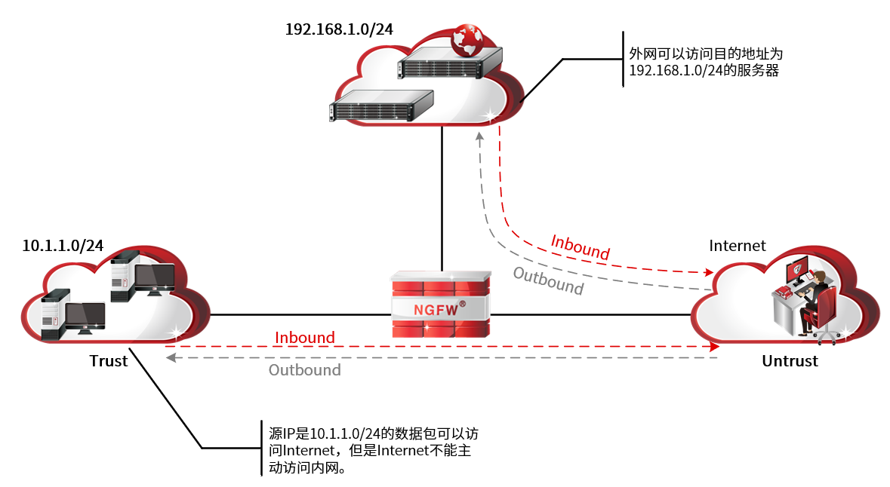

安全策略是网络安全设备的基本功能，控制安全域间或不同地址段间的流量转发。安全策略通过策略规则决定从一个（多个）安全域到另一个（多个）安全域/从一个地址段到另一个地址段的哪些流量应被放行，哪些流量应被阻断。安全域的示意拓扑如下图所示。

NGFW的基本作用是保护特定网络免受“不信任”的网络的攻击，但是同时还必须允许两个网络之间可以进行合法的通信。安全策略的作用就是对通过NGFW的数据流进行检验，符合安全策略的合法数据流才能通过NGFW。
随着技术的发展，安全策略大致分为几个阶段：
l基于访问控制规则的包过滤
l通过在域间引用访问控制规则实现包过滤
l匹配条件：报文头的五元组和时间段
l动作：拒绝和允许报文通过
l融合UTM的安全策略（包过滤+UTM）
l在包过滤基础上增加UTM处理，包括IPS/AV/URL过滤等
l动作为“允许”的报文继续进行UTM处理，通过UTM检测的报文才真正允许通过
l一体化安全策略（五元组+应用+用户）
l真正的一体化策略，可一次识别流量的应用类型、携带的内容等数据，供内容安全功能使用
l增加应用、角色两个匹配条件，解决了基于端口、IP识别流量不准确的问题
l应用、内容、威胁感知能力增强
NGFW实现了基于五元组、角色和应用的一体化安全策略，并结合内容、安全引擎等多个维度的识别将模糊的网络环境映射为实际的业务环境，从而细粒度的管理与控制通过设备的各种数据报文中隐藏的攻击等，实现精准的访问控制和安全检测。
通过NGFW提供的安全策略模块，管理员可以将访问控制规则与资源对象相关联，从而实现对指定对象（包括区域、地址、时间、服务、应用、域名）细粒度的访问控制。通过安全策略模块中的地址转换策略，管理员可以控制内外网之间的访问，如限制外网用户对内网服务器的直接访问等。通过流量控制策略，管理员可以对通过设备的流量进行管理和控制，合理分配带宽资源。
NGFW将数据报文的属性与安全策略的条件进行匹配，若所有条件都匹配，则此流量成功匹配安全策略，若其中有一个条件不匹配则不匹配安全策略。
同一域内应用多条安全策略时，排序在前的安全策略优先匹配数据报文。若数据报文匹配到了一条策略就不再继续匹配剩下的策略，若没有匹配到任何策略就按系统默认规则进行处理。
|
²对于同一条数据流只有首包匹配安全策略并建立会话，后续包都匹配会话转发。即在访问发起的方向上应用安全策略。 |

安全策略的内容主要包括：
l访问控制
l地址转换
l流量管理
l黑白名单
l连接限制
l行为分析
lALG